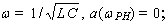
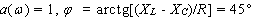
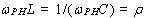
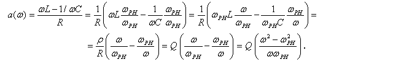
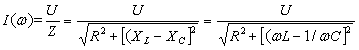

2.7.2.7. Обобщённая расстройка контура. Нормированный ток
|
Обычно резонансные кривые I(ω), UC(ω) и др. изображают на графиках в относительных единицах, откладывая ток в долях от тока при резонансе, а частоту - в долях от резонансной частоты или от обобщённой расстройки контура. Обобщённая расстройка последовательного колебательного контура - это отношение реактивного сопротивления контура к резистивному, т. е.
При  При  Подставив в (2.112) ,
и преобразовав, получим
 Модуль тока последовательного контура при любой частоте  Учитывая, что при резонансе IРН = U/R = Imax, имеем
Отношение тока I(ω) при любой частоте к току Imax при резонансе напряжений носит название нормированный ток.
| |||||||